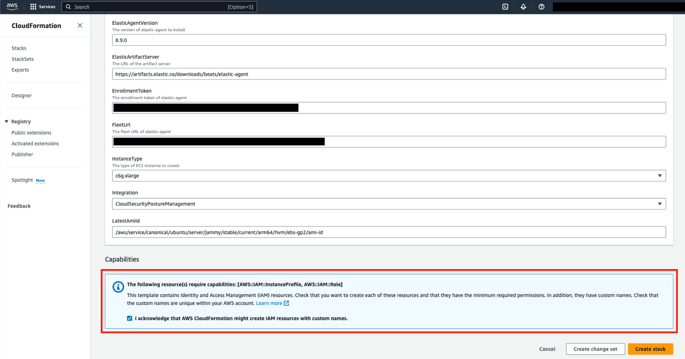
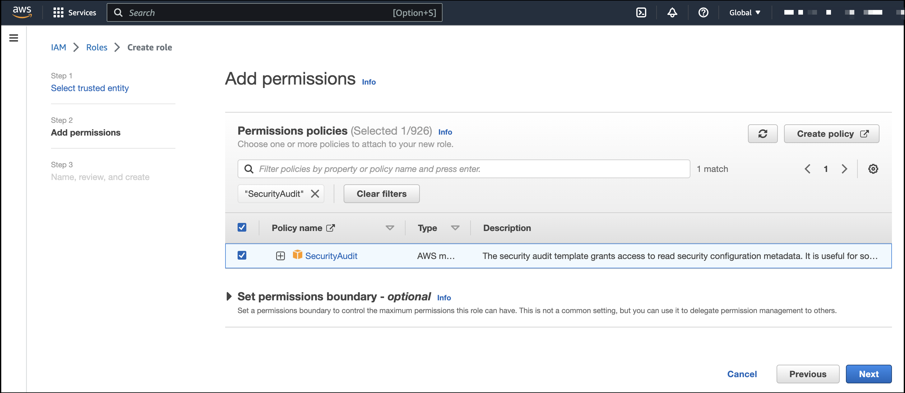
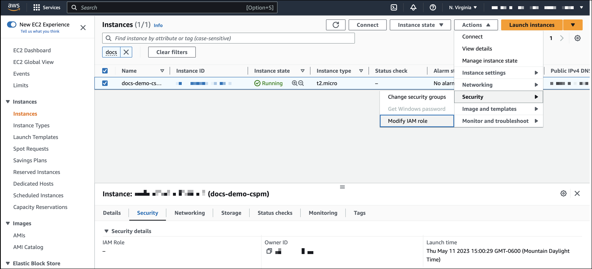

Get started with CSPM for AWS
editGet started with CSPM for AWS
editOverview
editThis page explains how to get started monitoring the security posture of your cloud assets using the Cloud Security Posture Management (CSPM) feature.
Requirements
- Minimum privileges vary depending on whether you need to read, write, or manage CSPM data and integrations. Refer to CSPM privilege requirements.
-
CSPM only works in the
DefaultKibana space. Installing the CSPM integration on a different Kibana space will not work. - CSPM is supported only on AWS, GCP, and Azure commercial cloud platforms, and AWS GovCloud. Other government cloud platforms are not supported (request support).
-
The user who gives the CSPM integration AWS permissions must be an AWS account
admin.
Set up CSPM for AWS
editYou can set up CSPM for AWS either by enrolling a single cloud account, or by enrolling an organization containing multiple accounts. Either way, first you will add the CSPM integration, then enable cloud account access. Two deployment technologies are available: agentless, and agent-based. Agentless deployment allows you to collect cloud posture data without having to manage the deployment of an Elastic Agent in your cloud. Agent-based deployment requires you to deploy and manage an Elastic Agent in the cloud account you want to monitor.
Agentless deployment
edit[beta] This functionality is in beta and is subject to change. The design and code is less mature than official GA features and is being provided as-is with no warranties. Beta features are not subject to the support SLA of official GA features.
- Find Integrations in the navigation menu or use the global search field.
-
Search for
CSPM, then click on the result. - Click Add Cloud Security Posture Management (CSPM).
- Select AWS, then either AWS Organization to onboard multiple accounts, or Single Account to onboard an individual account.
-
Give your integration a name that matches the purpose or team of the AWS account/organization you want to monitor, for example,
dev-aws-account. - Click Advanced options, then select Agentless (BETA).
-
Next, you’ll need to authenticate to AWS. Two methods are available:
-
Option 1: Direct access keys/CloudFormation (Recommended). Under Preferred method select Direct access keys. Expand the Steps to Generate AWS Account Credentials section, then follow the displayed instructions to automatically create the necessary credentials using CloudFormation.
If you don’t want to monitor every account in your organization, specify which to monitor using the
OrganizationalUnitIDsfield that appears after you click Launch CloudFormation. - Option 2: Temporary keys. To authenticate using temporary keys, refer to the instructions for Temporary keys.
-
- Once you’ve selected an authentication method and provided all necessary credentials, click Save and continue to finish deployment. Your data should start to appear within a few minutes.
Agent-based deployment
edit- Find Integrations in the navigation menu or use the global search field.
-
Search for
CSPM, then click on the result. - Click Add Cloud Security Posture Management (CSPM).
- Select AWS, then either AWS Organization to onboard multiple accounts, or Single Account to onboard an individual account.
-
Give your integration a name that matches the purpose or team of the AWS account/organization you want to monitor, for example,
dev-aws-account.
The CSPM integration requires access to AWS’s built-in SecurityAudit IAM policy in order to discover and evaluate resources in your cloud account. There are several ways to provide access.
For most use cases, the simplest option is to use AWS CloudFormation to automatically provision the necessary resources and permissions in your AWS account. This method, as well as several manual options, are described below.
- In the Add Cloud Security Posture Management (CSPM) integration menu, under Setup Access, select CloudFormation.
- In a new browser tab or window, log in as an admin to the AWS account or organization you want to onboard.
- Return to your Kibana tab. Click Save and continue at the bottom of the page.
- Review the information, then click Launch CloudFormation.
- A CloudFormation template appears in a new browser tab.
-
For organization-level deployments only, you must enter the ID of the organizational units where you want to deploy into the CloudFormation template’s
OrganizationalUnitIdsfield. You can find organizational unit IDs in the AWS console under AWS Organizations → AWS Accounts (under each organization’s name). You can also use this field to specify which accounts in your organization to monitor, and which to skip. - (Optional) Switch to the AWS region where you want to deploy using the controls in the upper right corner.
-
Tick the checkbox under Capabilities to authorize the creation of necessary resources.
 - At the bottom of the template, select Create stack.
When you return to Kibana, click View assets to review the data being collected by your new integration.
If you’re onboarding a single account instead of an organization, skip this section.
When using manual authentication to onboard at the organization level, you need to configure the necessary permissions using the AWS console for the organization where you want to deploy:
-
In the organization’s management account (root account), create an IAM role called
cloudbeat-root(the name is important). The role needs several policies:-
The following inline policy:
Click to expand policy
{ "Version": "2012-10-17", "Statement": [ { "Action": [ "organizations:List*", "organizations:Describe*" ], "Resource": "*", "Effect": "Allow" }, { "Action": [ "sts:AssumeRole" ], "Resource": "*", "Effect": "Allow" } ] } -
The following trust policy:
Click to expand policy
{ "Version": "2012-10-17", "Statement": [ { "Effect": "Allow", "Principal": { "AWS": "arn:aws:iam::<Management Account ID>:root" }, "Action": "sts:AssumeRole" }, { "Effect": "Allow", "Principal": { "Service": "ec2.amazonaws.com" }, "Action": "sts:AssumeRole" } ] } -
The AWS-managed
SecurityAuditpolicy.
-
You must replace <Management account ID> in the trust policy with your AWS account ID.
-
Next, for each account you want to scan in the organization, create an IAM role named
cloudbeat-securityauditwith the following policies:-
The AWS-managed
SecurityAuditpolicy. -
The following trust policy:
Click to expand policy
{ "Version": "2012-10-17", "Statement": [ { "Effect": "Allow", "Principal": { "AWS": "arn:aws:iam::<Management Account ID>:role/cloudbeat-root" }, "Action": "sts:AssumeRole" } ] }
-
The AWS-managed
You must replace <Management account ID> in the trust policy with your AWS account ID.
After creating the necessary roles, authenticate using one of the manual authentication methods.
When deploying to an organization using any of the authentication methods below, you need to make sure that the credentials you provide grant permission to assume cloudbeat-root privileges.
Whichever method you use to authenticate, make sure AWS’s built-in SecurityAudit IAM policy is attached.
If you are deploying to an AWS organization instead of an AWS account, you should already have created a new role, cloudbeat-root. Skip to step 2 "Attach your new IAM role to an EC2 instance", and attach this role. You can use either an existing or new EC2 instance.
Follow AWS’s IAM roles for Amazon EC2 documentation to create an IAM role using the IAM console, which automatically generates an instance profile.
-
Create an IAM role:
- In AWS, go to your IAM dashboard. Click Roles, then Create role.
- On the Select trusted entity page, under Trusted entity type, select AWS service.
-
Under Use case, select EC2. Click Next.

-
On the Add permissions page, search for and select
SecurityAudit. Click Next. - On the Name, review, and create page, name your role, then click Create role.
-
Attach your new IAM role to an EC2 instance:
- In AWS, select an EC2 instance.
-
Select Actions → Security → Modify IAM role.
 - On the Modify IAM role page, search for and select your new IAM role.
- Click Update IAM role.
- Return to Kibana and finish manual setup.
Make sure to deploy the CSPM integration to this EC2 instance. When completing setup in Kibana, in the Setup Access section, select Assume role. Leave Role ARN empty for agentless deployments. For agent-based deployments, leave it empty unless you want to specify a role the Elastic Agent should assume instead of the default role for your EC2 instance. Click Save and continue.
Access keys are long-term credentials for an IAM user or AWS account root user. To use access keys as credentials, you must provide the Access key ID and the Secret Access Key. After you provide credentials, finish manual setup.
For more details, refer to Access Keys and Secret Access Keys.
You must select Programmatic access when creating the IAM user.
You can configure temporary security credentials in AWS to last for a specified duration. They consist of an access key ID, a secret access key, and a session token, which is typically found using GetSessionToken.
Because temporary security credentials are short term, once they expire, you will need to generate new ones and manually update the integration’s configuration to continue collecting cloud posture data. Update the credentials before they expire to avoid data loss.
IAM users with multi-factor authentication (MFA) enabled need to submit an MFA code when calling GetSessionToken. For more details, refer to AWS’s Temporary Security Credentials documentation.
You can use the AWS CLI to generate temporary credentials. For example, you could use the following command if you have MFA enabled:
sts get-session-token --serial-number arn:aws:iam::1234:mfa/your-email@example.com --duration-seconds 129600 --token-code 123456
The output from this command includes the following fields, which you should provide when configuring the KSPM integration:
-
Access key ID: The first part of the access key. -
Secret Access Key: The second part of the access key. -
Session Token: The required token when using temporary security credentials.
After you provide credentials, finish manual setup.
If you use different AWS credentials for different tools or applications, you can use profiles to define multiple access keys in the same configuration file. For more details, refer to AWS' Shared Credentials Files documentation.
Instead of providing the Access key ID and Secret Access Key to the integration, provide the information required to locate the access keys within the shared credentials file:
-
Credential Profile Name: The profile name in the shared credentials file. -
Shared Credential File: The directory of the shared credentials file.
If you don’t provide values for all configuration fields, the integration will use these defaults:
-
If
Access key ID,Secret Access Key, andARN Roleare not provided, then the integration will check forCredential Profile Name. -
If there is no
Credential Profile Name, the default profile will be used. -
If
Shared Credential Fileis empty, the default directory will be used.-
For Linux or Unix, the shared credentials file is located at
~/.aws/credentials.
-
For Linux or Unix, the shared credentials file is located at
After providing credentials, finish manual setup.
An IAM role Amazon Resource Name (ARN) is an IAM identity that you can create in your AWS account. You define the role’s permissions. Roles do not have standard long-term credentials such as passwords or access keys. Instead, when you assume a role, it provides temporary security credentials for your session.
To use an IAM role ARN, select Assume role under Preferred manual method, enter the ARN, and continue to Finish manual setup.
Once you’ve provided AWS credentials, under Where to add this integration:
If you want to monitor an AWS account or organization where you have not yet deployed Elastic Agent:
- Select New Hosts.
-
Name the Elastic Agent policy. Use a name that matches the purpose or team of the cloud account or accounts you want to monitor. For example,
dev-aws-account. - Click Save and continue, then Add Elastic Agent to your hosts. The Add agent wizard appears and provides Elastic Agent binaries, which you can download and deploy to your AWS account.
If you want to monitor an AWS account or organization where you have already deployed Elastic Agent:
- Select Existing hosts.
- Select an agent policy that applies the AWS account you want to monitor.
- Click Save and continue.